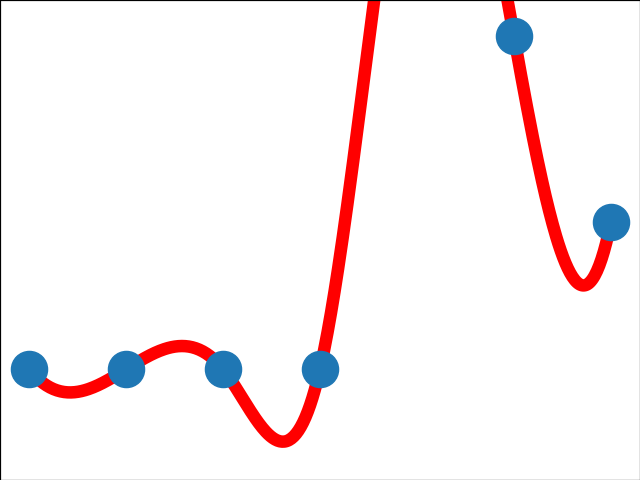
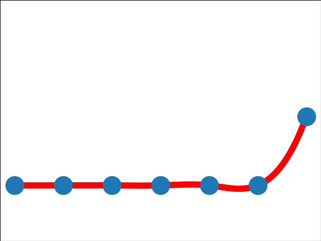
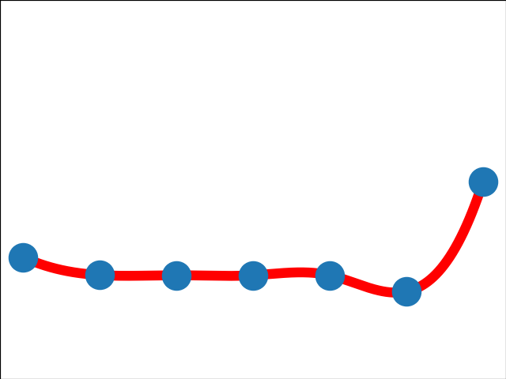
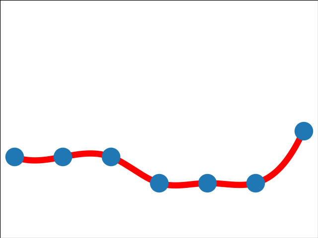
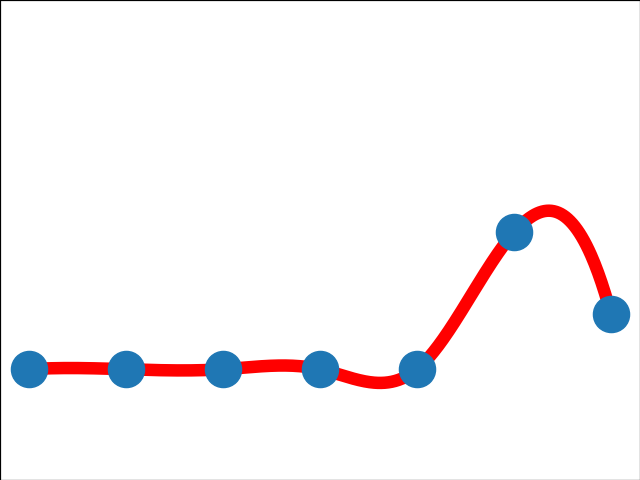

| USDC |
🔥🔥🔥
16.67 |
📈📈📈
1.79 |
 |
blockbeats(03-12 14:17): 危机与机遇共存，看机构与大户都「抄底」了多少USDC？
odaily(03-12 12:42): 如何利用“USDC危机”套利？这16位“超级大户”的手法如下
foresightnews(03-12 16:31): USDC惊魂时刻，机构大户们选择买入还是卖出？
foresightnews(03-12 12:14): 多方讨论：USDC会暴雷吗？谁会成为白衣骑士
foresightnews(03-12 22:19): USDC事件分析（二）：FUD的终点，熊市下半场的起点
foresightnews(03-12 22:12): USDC事件分析（一）
panewslab(03-12 13:37): 复盘USDC脱锚下的抄底、避险和套利机会 |
to be completed |
to be completed |
| 硅谷 |
🔥🔥
5.56 |
📈📈📈
0.6 |
|
blockbeats(03-12 13:45): 硅谷银行崩溃对加密行业意味着什么
marsbit(03-12 23:26): 硅谷银行之死 |
to be completed |
to be completed |
| 建设者 |
🔥
3.7 |
📈📈
0.4 |
 |
foresightnews(03-12 09:00): 成为以太坊上海升级的一部分，用叙事回顾华人建设者的努力
foresightnews(03-12 21:38): 转载|成为以太坊上海升级的一部分，用叙事回顾华人建设者的努力 |
to be completed |
to be completed |
| 中心化 |
🔥
3.7 |
📈📈
0.36 |
 |
foresightnews(03-12 16:46): 稳定币向左与向右：“影子银行”or与世界撕裂的去中心化
foresightnews(03-12 12:36): “去中心化”稳定币暴雷与SPOT近期的问题 |
to be completed |
to be completed |
| DEFI |
🔥
3.7 |
📈
0.29 |
 |
foresightnews(03-12 00:52): 先知DEFI交互作业3.11【干货/空投】第392天
foresightnews(03-12 22:27): 先知DEFI交互作业3.12【干货/空投】第393天 |
to be completed |
to be completed |
| Circle |
🔥
3.7 |
📈📈
0.4 |
 |
blockbeats(03-12 08:39): Circle回应USDC脱锚（全文）：必要时使用外部资本弥补储备金短缺
odaily(03-12 11:45): Circle官方回应USDC脱锚：将使用所有资源弥补资金短缺 |
to be completed |
to be completed |
| 48 |
🔥
3.7 |
📈📈
0.4 |
 |
panewslab(03-12 12:04): 硅谷银行破产48小时！或还会引发科技企业裁员潮等连锁反应，压力给到美联储
marsbit(03-12 08:19): 硅谷银行挤兑的48小时：多个加密风投和初创企业被波及、USDC等稳定币脱锚 |
to be completed |
to be completed |